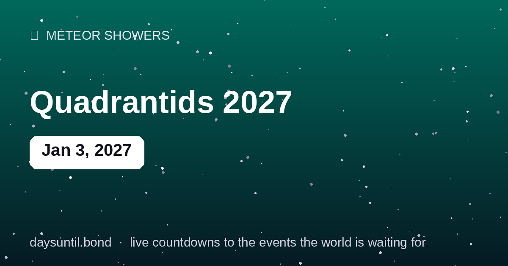

How Many Days Until Quadrantids 2027?
Quadrantids 2027 falls on Sunday, January 3, 2027.
The live counter above updates every second in your local time zone. The date and weekday are shown in the event details.

Quick facts
| Peak night | January 3–4, 2027 |
|---|---|
| Best viewing | After midnight to pre-dawn |
| Equipment | None — naked eye only |
About Quadrantids 2027
The Quadrantids meteor shower peaks on the night of January 3, 2027 (January 3/4). The year's first major meteor shower — short, sharp and often stormy, with peak rates of 60–200 meteors per hour compressed into just six hours.
Best practice for any meteor shower: dark sky, no telescope, eyes adjusted for 30 minutes, look halfway up toward the radiant's constellation. The counter above runs to the peak night; meteors are visible several nights either side.
When the Quadrantids peak in 2027
The Quadrantids are expected to peak around January 3, 2027, with the main observing window extending into the night of January 3–4. The shower is known for a comparatively short, sharp maximum, so the best hour can matter more than it does for broader showers. Use the live countdown above for the date, then check a current meteor-shower forecast for the exact predicted peak time as the event approaches.
The published zenithal hourly rate is a theoretical rate under ideal conditions: a dark, clear sky, the radiant high overhead and an experienced observer able to see the whole sky. It is not a promise that every observer will count that many meteors. Your actual view depends on cloud, light pollution, the radiant's altitude and the Moon.
Where the Quadrantids come from
Quadrantid meteors appear to radiate from the northern part of the sky near the historic constellation Quadrans Muralis, whose name survives in the shower even though the constellation is no longer officially recognised. The modern radiant lies in the region of Boötes, near the handle of the Big Dipper.
The shower is associated with the near-Earth object 2003 EH1, generally considered an extinct or dormant comet-like body. As Earth crosses the debris stream, small particles enter the atmosphere at high speed and create the brief streaks observers call meteors. No telescope is needed: the naked eye gives the widest field of view.
How to watch the 2027 Quadrantids
Choose a dark location with an open view, allow your eyes around 20–30 minutes to adapt, and avoid looking at bright phone screens. Lie back or use a reclining chair so you can scan a broad area of sky. Do not stare only at the radiant: meteor trails can appear far from it, and longer trails are often easier to notice away from the point they seem to originate.
Dress for the cold, check cloud cover before travelling and give yourself time to observe. The Quadrantids are a winter shower in the Northern Hemisphere, and a warm car or shelter nearby can make a long session more comfortable. If clouds interrupt the peak, the surrounding nights may still offer activity, but usually at a lower rate.
What affects the number of meteors you will see
The radiant's height changes through the night. Meteor activity is often better after midnight, when your location on Earth faces more directly into the incoming stream. A dark sky is essential: city lights hide faint meteors, while a bright Moon can wash out much of the display.
The Quadrantids' narrow peak makes timing especially important. A forecast peak is a prediction rather than a guarantee, and the strongest activity may occur at an inconvenient local hour. Check the latest observing forecast and local weather shortly before the night.
Quadrantids compared with other annual showers
These are recurring seasonal patterns, not substitutes for a year-specific forecast. Peak timing, Moon conditions and local visibility change from one return to the next.
| Shower | Usual peak period | What makes it distinctive |
|---|---|---|
| Quadrantids | Early January | Short, sharp peak; winter observing conditions |
| Lyrids | Around April 22 | Occasional bright fireballs |
| Perseids | Around August 12–13 | Warm-weather viewing and frequent bright meteors |
| Orionids | Around October 21–22 | Fast meteors associated with Halley's Comet |
| Geminids | Around December 13–14 | Often one of the year's strongest annual displays |
Your Quadrantids 2027 countdown milestones
It is easier to plan against fixed points than against a number that moves. These are the dates on which the countdown to Quadrantids 2027 passes each marker between now and the day itself — the last one falls on Saturday 02 January, when there will be 1 day left.
| Milestone | Day | Date | Remaining |
|---|---|---|---|
| 30 days | Friday | 04 December 2026 | 30 days to go |
| 14 days | Sunday | 20 December 2026 | 14 days to go |
| 7 days | Sunday | 27 December 2026 | 7 days to go |
| 3 days | Thursday | 31 December 2026 | 3 days to go |
| 1 days | Saturday | 02 January 2027 | 1 day to go |
How the remaining time breaks down
38 days is the headline, but it is rarely the number that helps. 26 of those are weekdays and 12 fall on a weekend, which is the split that matters if you are planning around work. It is 5 weeks and 3 days, or roughly 1.2 months, or about 912 hours.
| Unit | Until Quadrantids 2027 |
|---|---|
| Days | 38 |
| Weeks | 5 weeks and 3 days |
| Months (approx) | 1.2 |
| Weekdays | 26 |
| Weekend days | 12 |
| Hours | 912 |
| Sleeps | 38 |
Working days are Monday to Friday and do not subtract public holidays, which vary by country and employer — the full month-by-month split is on our weekday page for Quadrantids 2027.